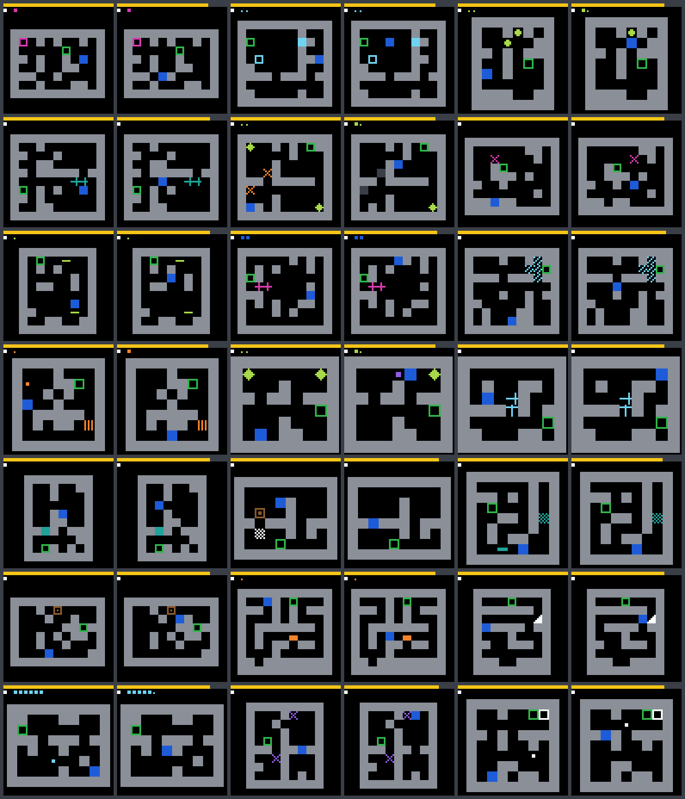
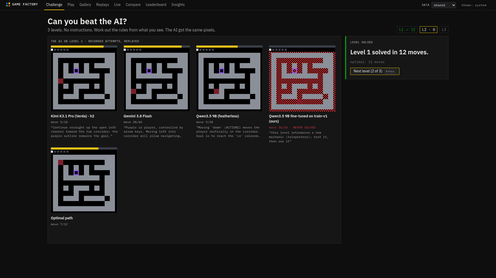

Observation
64×64×16
Pixels + lossless RLE only. Zero English rule hints. Per-seed skin_shuffle.
Instruction-heavy benchmarks test reading comprehension and memorized training priors. Real-world agents break when undocumented state transitions change silently without a manual. We built an infinite factory of verified causal worlds where every rule must be discovered by acting.
Every seed compiles a 6–8 level curriculum (dev, frozen eval-v1, harder eval-v2 with Tier-3 drift/timing) where each level adds one hidden mechanic that is mathematically proven necessary to win.

Scan the QR or open /challenge: zero login, zero API keys, running 100% client-side in TypeScript (engine.ts) on the exact held-out games frontier models played.

We keep h1 (stateless rolling-notes) and h2 (full multi-turn history, preserved thinking blocks, high/max effort, 64k/32k output cap, native act() tool) strictly separate.
| Player | Split / Mode | Lvl Solve | Score |
|---|---|---|---|
| Optimal (`oracle`) | BFS / Harbor | 100.0% | 1.000 |
| Human (first-attempt) | eval-v1 / eval-v2 | 100% / 92.5% | 0.795 / 0.630 |
| Gemini 3.8 Flash (`med`)* | eval-v1 (3 d1–d2) | 100.0% | 0.575 |
| Kimi K3.1 Pro | dev (8 games) | 52.1% | 0.374 |
| OpenCode + Nemotron (`k=3`) | Harbor MCP | 16.7% | 0.067 |
| Nemotron 3.5 Super VL | dev (8 games) | 12.5% | 0.061 |
| DeepSeek V3.2 / gpt-oss-120b | dev [rle only] | 0.0% (0/96) | 0.000 |
| Player (`effort`) | Subset | Win | Score [95% CI] |
|---|---|---|---|
| Optimal | eval-v1 / v2 | 100% | 1.000 |
| Claude Haiku 5.5 (`high`) | eval-v1 (1/6 d1) | 100% | 0.827 (n=1) |
| Gemini 3.1 Pro (`high`) | eval-v1 (2/6 d1–d2) | 100% | 0.803 [.732,.874] |
| Human (unassisted) | eval-v1 (d1–d3) | 100% | 0.795 |
| Kimi K3.1 Pro (`max`) | eval-v1 (all 6/6) | 50% | 0.671 [.541,.795] |
| Human (unassisted) | eval-v2 (d4, l8) | 100% | 0.637 [.635,.639] |
| Kimi K3.1 Pro (`max`) | eval-v2 (d4, l8) | 0% | 0.463 [.389,.537] |
Across 99 extracted failure decision points (56 judge-verified level diagnoses in explanations.json), every failure pins down the exact step where an agent's causal hypothesis diverges from engine truth.

| Harbor Agent Run | Actions | Levels | Reward |
|---|---|---|---|
| oracle (full game) | 92 | 6 / 6 | 1.000 |
| oracle STOP_AFTER=3 | 45 | 3 / 6 | 0.500 |
| oracle STOP_AFTER=1 | 13 | 1 / 6 | 0.167 |
| nop / stop_early / random | 0..400 | 0 / 6 | 0.000 |
Pre-registered in bench/PROTOCOL.md v2 & FT_BENCHMARKS.md before scoring trained checkpoints: token-matched ctrl vs games vs mix + MMLU-Pro: History negative control.
| Tier | Benchmarks (`lm-eval 0.4.13`, `max_toks=8192`) | Role |
|---|---|---|
| Primary (6) | BBH (27-task), MATH, GSM8K, MedQA, MMLU-Pro Health & Law | Headline mean |
| Neg. Ctrl | MMLU-Pro: History (5-shot CoT) | Format guard |
| BBH Logic (5) | Shuffled Objects, Navigate, Deduction, Web of Lies, Temporal | Near-logic |
We assessed all 6 candidate markets in docs/BUSINESS.md and selected the 3 where our Harbor sidecar, failure forensics, and post-training pipeline solve an immediate pain point today.
Private seeded splits + skin_shuffle + container-verified Harbor MCP (9/9 red-team = 0.000) give labs an uncontaminated evaluation & GRPO reward signal where even h2 frontier models score 0.463 on eval-v2.
Catches silent failure loops before production: 46.9% of agent failures are zero-change action loops and 42.1% are sunk-cost refusals to reset — the exact failure modes that burn cloud & tool budgets.
Generates unlimited solver-verified state-prediction & rule-induction traces (engine/tasks). SFT v1 (0.012) proved trajectory cloning fails without the grounded causal rationales our engine synthesizes.
Every table on every slide is verified by python -m analysis check-claims (0 errors across all 7 derived files). Ready for the 15-minute live judge exploit hunt.